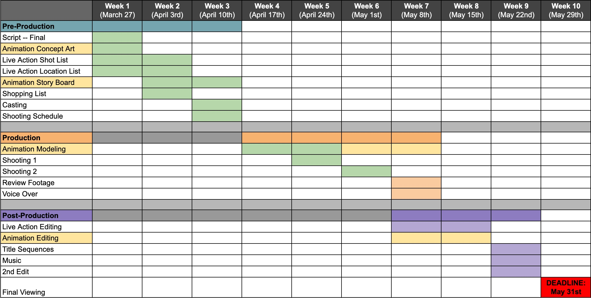

While teaching over 400 high school students a week, I challenged over 20 student screenwriters, videographers, animators to come together and make a film. Here’s what we made.
For 10 months, I worked as a Fulbright English Teaching Assistant in Burgas, Bulgaria. I taught high school students at two schools: Sts. Kiril and Methodij, the Vocational School for Computer Programming and Innovation. One of my main goals was to provide students with space to find their own perspectives and voices in order to reflect upon themselves, their school, and their community. And while there were definitely times when I doubted the successful outcome of this goal, in the end I have been able to look back not only at we’ve done, but also what we’ve created.
And finally, we created a film. Taking about 10 weeks to complete with over 20 students as either as cast or crew, I am proud to present a short, narrative film featuring aspects of my stay in Bulgaria and what I took away with me when I left.
Synopsis: A young English teacher about to leave Bulgaria is stalked by a strange symbol, the meaning of which leads her to a place both familiar and odd, frustrating and inspiring, and, above all, unforgettable.
With the goal to get as many students as possible interested in producing a film, the process had to be organized. This was not homework, this was not a project that with a grade at the end — this was a job with full autonomy and creative control. The 13 to 17 year olds took this as a breath of fresh air and stuck to the production schedule despite tests, after school activities, and weekend plans. We started with coordinating the shooting and animations schedules virtually on Discord, continued with filming once or twice a week over three weekends, and finished with editing using Adobe Premiere that took 17 hours during the one week to complete the project before the deadline.
